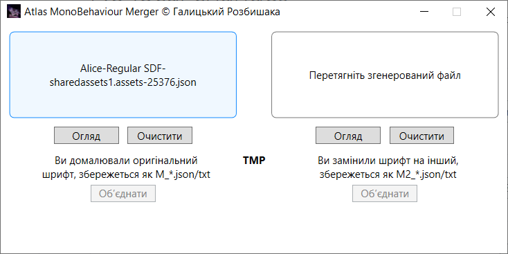

Програма для злиття згенерованих гліфів з оригінальним MonoBehaviour шрифту для Unity. Ідея базується на Java-програмі від Fomka_Wyverno, однак алгоритм було допрацьовано: додано новий режим злиття, підтримку формату .txt та тип шрифту 2D. Програма написана на C# і працює на Windows 7-11.
- Підтримка типів шрифту TextMesh Pro (TMP) та 2D.
- Підтримка форматів .json та .txt.
- Drag & Drop та ручний вибір файлу.
- Два режими злиття: M — зберігається метрика оригінального шрифту, копіюються лише координати згенерованих гліфів. M2 — копіюються як координати гліфів, так і метрика нового шрифту.
- Збереження готового файлу поруч із програмою.
Завантажити
Подякувати за програму: monobank
Зворотній зв’язок через Телеграм: Галицький Розбишака